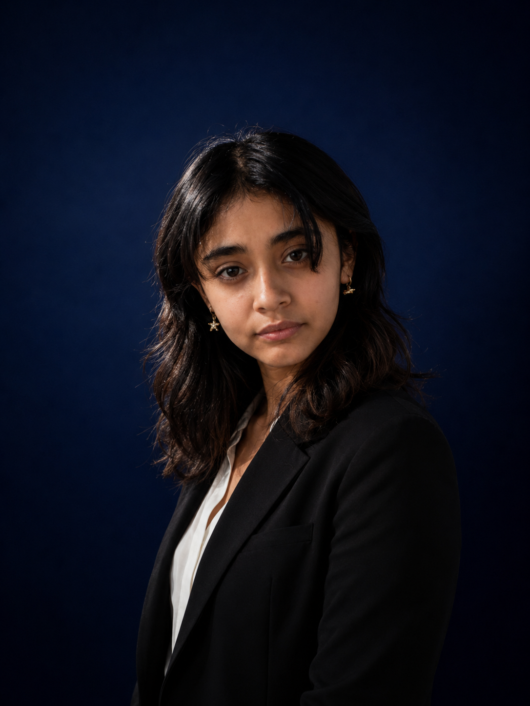

Ingeniería en Sistemas • Evelyn Chiyut
Soy una persona tranquila, responsable y creativa. Me esfuerzo mucho por alcanzar cada meta que me propongo y siempre trato de dar lo mejor de mí en todo lo que hago.
Actualmente estudio Ingeniería en Sistemas, una carrera que me ha permitido descubrir áreas que disfruto mucho, como el diseño web, la programación, las redes y la lógica.
Me identifico mucho con el azul marino y el mar, porque representan calma, profundidad y elegancia, aspectos que también quiero transmitir en mis proyectos personales.
Creatividad: me gusta imaginar ideas nuevas y convertirlas en proyectos visuales.
Responsabilidad: trato de cumplir mis tareas de la mejor manera posible.
Paciencia: entiendo que cada proceso requiere tiempo y dedicación.
Lógica: disfruto analizar problemas y buscar soluciones.
Esfuerzo: cuando quiero lograr algo, me esfuerzo hasta conseguirlo.